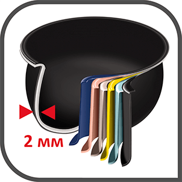

<section class="cup">
        <p class="cup__text">
            Шестислойная чаша мультиварки сделана из специального сплава
            (аллюминий, два слоя антипригарного покрытия), компоненты которого <br>
            Имеют повышенную теплопроводность, дольше противостоят коррозии <br>
            И механическим повреждениям. Покрытие с прекрасными показателями
            Изностоцкости прошло специальные тесты на абразивную обработку, <br>
            Оно нимально подвержено сколам; чашу  можно мыть в посудомоечной 
            машине.
        </p>
        
    </section>